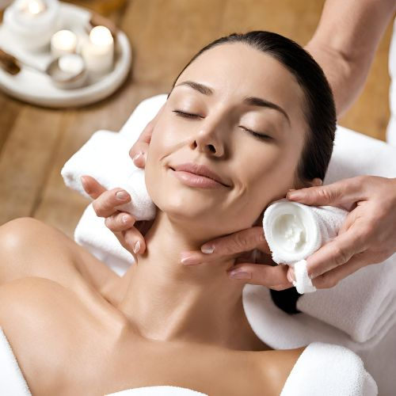

The Pure Radiance Renewal Facial at our state-of-the-art facility is a luxurious and indulgent skincare experience designed to revitalize and rejuvenate the skin, leaving it radiant and luminous.
The treatment begins with a thorough skin analysis by skilled estheticians, who then customize the facial to address your unique skin type and concerns using only
the finest natural ingredients. The facial incorporates a series of gentle cleansing and exfoliating steps to remove impurities and reveal fresh, glowing skin. This
is followed by a relaxing and nourishing massage, which promotes circulation and enhances the absorption of the specialized serums and moisturizers applied during the treatment.

The highlight of the facial is the application of targeted masks and treatments, each formulated to address specific skincare needs such as hydration, brightening, or firming.
These specialized products work to deeply nourish and revitalize the skin, leaving it feeling soft, supple, and radiant. Throughout the experience, you'll be able to drift into a
state of pure serenity under the soothing touch of the expert estheticians.
The treatment concludes with a refreshing mist and the application of SPF protection to shield your newly
radiant complexion from environmental stressors. After the Pure Radiance Renewal Facial, you'll emerge with a renewed sense of confidence and a luminous glow that radiates from within.
This luxurious skincare experience is the ultimate indulgence, unlocking the secret to timeless beauty.


.jpeg)